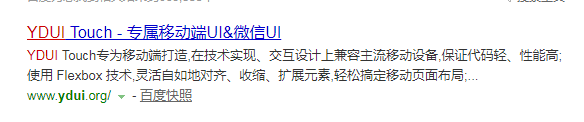

这两天开始编写手机页面，作为类似官网一样的使用，因为实在手机端访问的web端，没有做过尝试，而且由于手机的种类很多，导致兼容性要求很高，在网上找了一些教程，制作完毕后决定分析给大家。
先给大家看下成品效果图：
这就是手机访问之后的样子了，那具体怎么做好兼容，又能省事省力呢，我从网上找到了这个框架：

直接百度：ydui，这是一个专门为移动端web前端使用框架，使用方式也很简单，打开这个网站点击开始使用
<!DOCTYPE html>
<html>
<head>
<meta charset="UTF-8">
<title></title>
<meta content="width=device-width,initial-scale=1.0,maximum-scale=1.0,user-scalable=0" name="viewport" />
<meta content="yes" name="apple-mobile-web-app-capable" />
<meta content="black" name="apple-mobile-web-app-status-bar-style" />
<meta content="telephone=no" name="format-detection" />
<!-- 引入YDUI样式 -->
<link rel="stylesheet" href="path/build/css/ydui.css" />
<!-- 引入YDUI自适应解决方案类库 -->
<script src="path/build/js/ydui.flexible.js"></script>
</head>
<body>
<div class="g-view">
</div>
<!-- 引入jQuery 2.0+ -->
<script src="http://apps.bdimg.com/libs/jquery/2.1.4/jquery.min.js"></script>
<!-- 引入YDUI脚本 -->
<script src="path/build/js/ydui.js"></script>
</body>
</html>
这是测试页面，我们只需要下载这个框架的文件就行了，之后调用上面代码中调用到的css，以及js即可，之后所有的内容写在class为g-view的div中，这个框架就可以自动帮你调整兼容性了，需要注意的是，这是移动端框架，所以只支持移动端，如果是pc端或者平板访问可能就不会很兼容了。
为了和团队开发大小规范，一般移动端的单位都是rem，所以不能再用px作为单位了，可是作为设计还是会给你px的图纸，为此我们就需要自己计算好单位换算即可。